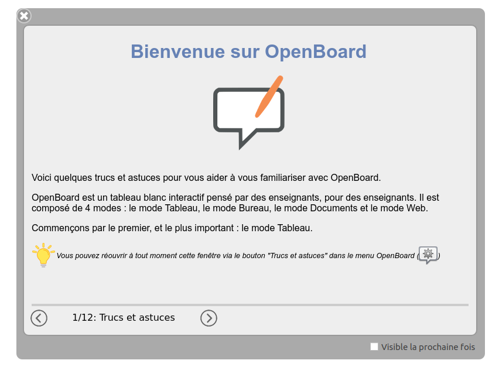

OpenBoard est un logiciel simple d'utilisation, mais vaste, et il faut du temps pour en maitriser tous les aspects.
Voici quelques conseils pour vous aider à le prendre en main.
La première fois que vous lancez OpenBoard, une fenêtre s'ouvre pour vous souhaiter la bienvenue et présenter le logiciel. Prenez le temps de lire les différentes pages, qui vous aideront dans la prise en main du logiciel !
Vous pouvez rouvrir à tout moment cette fenêtre via le bouton "Trucs et astuces" dans le menu OpenBoard situé en haut à droite de l'application.

Vous trouverez également sur ce site de la documentation, présentant OpenBoard et ses fonctionnalités. N'hésitez pas à y jeter un oeil en cliquant ici !
Si dans ce qui précède, vous n'avez pas trouvé l'aide que vous cherchiez, vous pouvez poser une question sur la plateforme GitHub afin d'obtenir l'aide de la communauté OpenBoard : suivez ce lien.
N'oiubliez pas que GitHub est une plateforme internationale, où de nombreuses nationalités participent. La langue utilisée pour les échanges est l'anglais, pour que tout le monde puisse profiter de vos échanges !